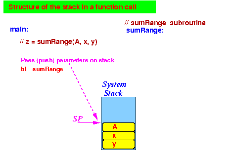

I will write the sumRange( )
program using the stack allocation technique
For simplicity sake, I will write the same (leaf function) sumRange( ):
public class MyCLass {
public static int sumRange(int[] A, int a, int b )
{
int i, s;
s = 0;
for (i = a, i < b; i++)
s = s + A[i];
return(s);
}
public static void main( )
{
int[] A = {11,12,13,14,15,16,17,18,19,20};
int x, y, z;
z = sumRange(A, x, y);
}
}
|
Difference:
I will
allocate parameters and
allocate local variables
on the
runtime stack
I.e.:
the stack technique is
general and
it will
also
work for
leaf functions !!!
Using registers vs. using the stack
How we used registers to store the parameters and the local variables:

Disadvantage: sumRange( ) can not call another function (its parameters and local variables will be overwritten !!!)
Using registers vs. using the stack
What this example will construct on the runtime stack:
Advantage: sumRange( ) can call another function (because its parameters and local variables will not be overwritten !!!)
The assembler code for the main( )
function
// Java statement: sum = sumRange(A, a, b):
main:
/* -------------------------------------------------
Pass 3nd parameter value b using the stack
------------------------------------------------- */
movw r0, #:lower16:b
movt r0, #:upper16:b
ldr r0, [r0]
push {r0}
/* -------------------------------------------------
Pass 2nd parameter value a using the stack
------------------------------------------------- */
movw r0, #:lower16:a
movt r0, #:upper16:a
ldr r0, [r0]
push {r0}
/* -------------------------------------------------------
Pass 1st parameter address of array A using the stack
------------------------------------------------------- */
movw r0, #:lower16:A
movt r0, #:upper16:A
push {r0}
/* ----------------------------------------------------------------

call sum = sumRange(A, a, b)
agreed inputs: r0 = addr of array A, r1 = a, r2 = b
agreed return: r0 = return value
---------------------------------------------------------------- */
bl sumRange
add sp, sp, #12 // Clean up the 3 int parameters off the stack
/* -----------------------------------------------------------------
Assign return value (in r0) to variable sum (sum = sumRange(..))
----------------------------------------------------------------- */
movw r1, #:lower16:sum // Do NOT use r0 !!!
movt r1, #:upper16:sum // (Because r0 contains the return value)
str r0, [r1] // This will store return value in sum
// ===========================================================
.data
DataStart:
A: .4byte 11, 12, 13, 14, 15, 16, 17, 18, 19 , 20
a: .4byte 1
b: .4byte 3
sum: .4byte -1
DataEnd:
|
The assembler code for the
sumRange( ) function
sumRange:
// When sumRange begins, we will have the parameters on the stack:
/* ==========================================================
Function Prelude: complete the stack frame structure
========================================================== */
push {lr} // Save LR (return address)
push {fp} // Save FP (used by caller)
mov fp, sp // Mark the stack top location before
// allocating any local variables
sub sp, sp, #8 // Allocate 2 int variables on the stack
/* ===============================================
We completed the stack frame
Now we can write the function body
=============================================== */
// s = 0
mov r0, #0 // offset(local var s) = -4 from FP
str r0, [fp, #-4] // s = 0
// i = a
ldr r0, [fp, #12] // offset(param a) = 12 from FP
str r0, [fp, #-8] // offset(loca var i) = -8 from FP
while: // while (i < b)
//// Get i into r0
ldr r0, [fp, #-8] // offset(local var i) = -8 from FP
//// Get b into r1
ldr r1, [fp, #16] // offset(b) = 16 from FP
//// Check for (i < b)
cmp r0, r1 // r0 = i, r1 = b
bge whileEnd // Exit while loop if FALSE
// s = s + A[i];
///// get A[i] into r10
ldr r0, [fp, #8] // r0 = addr of array A
ldr r1, [fp, #-8] // r1 = i
add r1, r1, r1 // r1 = 2*i
add r1, r1, r1 // r1 = 4*i = offset used to access A[i]
ldr r10, [r0, r1] // r10 = A[i] (r0=A(base), r1=offset)
///// get s into r0
ldr r0, [fp, #-4] // r0 = s
///// compute s + A[i]
add r0, r0, r10 // r0 = s + A[i]
///// Save sum in memory variable s
str r0, [fp, #-4] // s = s + A[i]
// i++
ldr r0, [fp, #-8] // r0 = i
add r0, r0, #1 // r0 = i+1
str r0, [fp, #-8] // i = i+1
b while // End of while body - loop back !!
whileEnd:
// return(s)
//// Put the return value in the agreed register (r0)
ldr r0, [fp, #-4] // r0=s
/* =============================================================
Function Postlude: de-allocate local variable and restore FP
============================================================= */
mov sp, fp // De-allocate local variables
pop {fp} // Restore fp
pop {pc} // Return to the caller
|
Key:
use
FP + offset to
access the
parameters and
local variables in the
stack frame !
DEMO:
/home/cs255001/demo/asm/8-sub/stack1.s